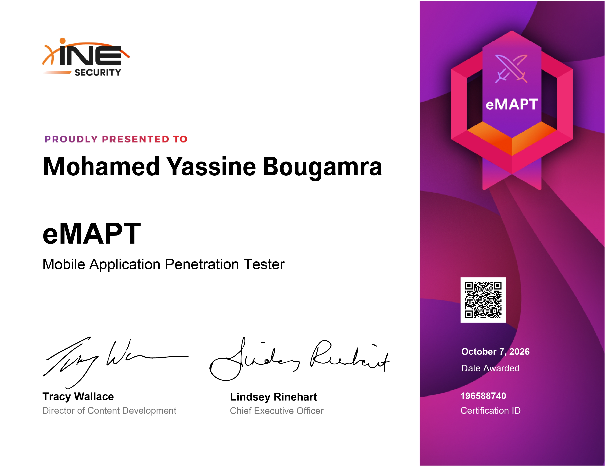

Mobile applications have become one of the most important attack surfaces in modern security. Testing them shares many ideas with web application testing, but the workflow is different. You have to understand the application package, the device, the runtime, and the backend together, because a weakness in any one of them can compromise the others.
That is why I decided to take the eLearnSecurity Mobile Application Penetration Tester (eMAPT) certification. I wanted to measure my mobile security skills and see how close the exam was to a real mobile application assessment.
Certification Snapshot

Certification: eLearnSecurity Mobile Application Penetration Tester
Main focus: Android and iOS application security testing
Assessment style: Questions, code review, and practical testing
Level: Beginner to intermediateWhat Is eMAPT?
eMAPT is a practical certification for people who want to test mobile applications. The main focus is Android, but the practical work also includes iOS applications. It checks whether you can understand an app, find weaknesses, and connect mobile behavior with API and backend security.
The main areas include:
- Static analysis and APK reverse engineering
- Dynamic analysis and runtime testing
- Traffic interception with tools such as Burp Suite or mitmproxy
- Common mobile application vulnerabilities
- Android application structure and security controls
- API and backend security testing
Exam Structure
1. Situational Questions
The first part contains scenario-based multiple-choice questions. These questions mainly check basic concepts, security practices, and your understanding of common mobile testing situations. The training material should give you a good base for this section.
2. Static Analysis
In the second part, you review code snippets, usually written in Java, and look for security problems. The important skill here is not just knowing Java syntax. You must understand what the code does and recognize insecure patterns quickly.
3. Practical Assessment
The practical part is the main part of the exam. You work with several applications and investigate them as a mobile penetration tester. The environment includes Android APK files and iOS IPA files.
Android Testing Workflow
For Android, I would begin by obtaining the APK from the emulator and reviewing it with tools such as jadx. Static analysis helps you understand the application before you start changing or intercepting its behavior.
At runtime, mobile applications may use protections that make testing more difficult. Two common examples are:
- Root detection
- SSL certificate pinning
Frida is useful for observing and modifying application behavior during testing. Depending on the situation, you may write a small script or adapt a known technique. The important point is to understand what the protection is doing instead of blindly using a bypass script.
After gaining a clearer view of the application, the work often moves toward authentication and the backend:
- Reviewing login and authorization logic
- Mapping API requests and responses
- Finding undocumented endpoints
- Changing requests to test access control and data exposure
iOS Testing Workflow
For iOS, the process starts with unpacking the IPA and performing static analysis. During this step, you may find information such as hardcoded keys, API routes, or functionality that is not visible in the normal user interface.
The next step is to interact with the discovered endpoints and test their parameters. A supplied wordlist can help with controlled fuzzing, while the API responses often provide useful clues for the next part of the investigation.
Small scripts can also save time when you need to collect values from many responses. In some cases, further investigation may reveal credentials or remote access details. These findings should be validated carefully and used only inside the authorized exam environment.
Difficulty and Reality Check
eMAPT may look simple if you already have web penetration testing experience. However, the mobile context adds several challenges:
- Application logic can be difficult to follow.
- Decompiled code may be unclear or partly obfuscated.
- The real application behavior may differ from what the code first suggests.
- The exam gives limited guidance, so you need a methodical process.
I would describe the certification as challenging but fair. It is not an expert-level exam, but it is also not something to attempt without hands-on preparation.
How I Would Prepare
Build the Fundamentals
- Learn the role of Android Activities, Services, and Broadcast Receivers.
- Understand APK structure and how to read the Android manifest.
- Study common mobile vulnerabilities through the OWASP Mobile Top 10.
Practice the Workflow
- Decompile and inspect APKs with jadx and apktool.
- Intercept mobile traffic with Burp Suite or mitmproxy.
- Practice on an emulator or a legally rooted test device.
- Use Frida to understand runtime behavior and security controls.
Use Real Practice Labs
Do not only watch demonstrations. The free labs and learning material from Mobile Hacking Lab are useful for building a repeatable workflow across Android and iOS challenges. Their YouTube channel is also helpful when you need to see how a mobile tester approaches a problem.
Hextree's Hexmap is another good practice resource. It organizes security topics into a learning path, similar to the way PortSwigger Academy helps web security learners. Use these platforms to understand why a weakness exists, not just to copy a command.
Common Mistakes
- Depending too much on automated tools.
- Skipping static analysis and starting with random runtime testing.
- Testing requests without first understanding the application's logic.
- Spending too long on one lead and losing track of time.
- Failing to keep clear notes about endpoints, findings, and evidence.
Is eMAPT Worth It?
eMAPT is a good choice if you:
- Want to start working in mobile application security.
- Already have basic penetration testing experience.
- Prefer a practical assessment over a purely theoretical exam.
It may not be the best first choice if you:
- Are looking for an advanced mobile research certification.
- Have no background in application security.
- Prefer exams that focus mostly on memorization.
Final Verdict
eMAPT is a solid beginner-to-intermediate certification for mobile application penetration testing. It will not make you an expert by itself, but it gives you a useful foundation and introduces a realistic mobile testing workflow.
If you already work with web applications and want to understand Android and iOS attack surfaces, eMAPT is a good next step. Combine the certification material with regular practice labs, careful note-taking, and a clear testing methodology. That is where the real value comes from.